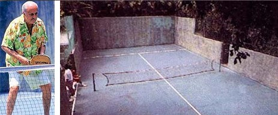

El pádel fue inventado en 1969 por el mexicano Enrique Corcuera. La idea surgió cuando Corcuera adaptó un terreno pequeño en su casa para crear una nueva forma de juego, aprovechando las paredes. El deporte se fue desarrollando y expandiendo primero en México, luego en España y Argentina, países donde alcanzó gran popularidad.
Este diseño con paredes y mallas le dio al deporte una característica única: la posibilidad de usar las paredes para mantener la pelota en juego, algo que lo diferencia del tenis. El pádel se difundió rápidamente. Gracias a un amigo de Corcuera, Alfonso de Hohenlohe, quien llevó el deporte a España tras ver el potencial que tenía. En 1974, Hohenlohe construyó las primeras canchas de pádel en Marbella, lo que dio inicio a la popularización del deporte en Europa. Desde España, el pádel se extendió a Argentina, donde tuvo un auge notable en los años 80 y 90, convirtiéndose en uno de los deportes más practicados del país.
Hoy, el pádel sigue creciendo globalmente, con torneos profesionales como La Premier Pádel, la cual compró la mayor liga de pádel antes conocida como World Padel Tour y la A1 Padel, su influencia se extiende a nuevos países cada año.
